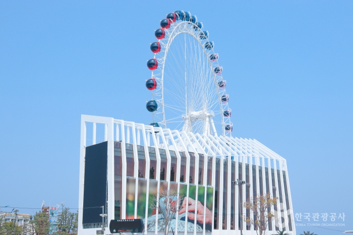
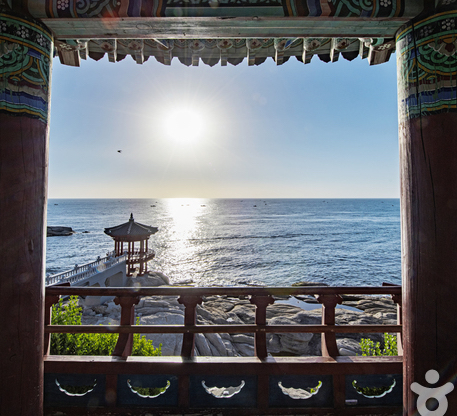
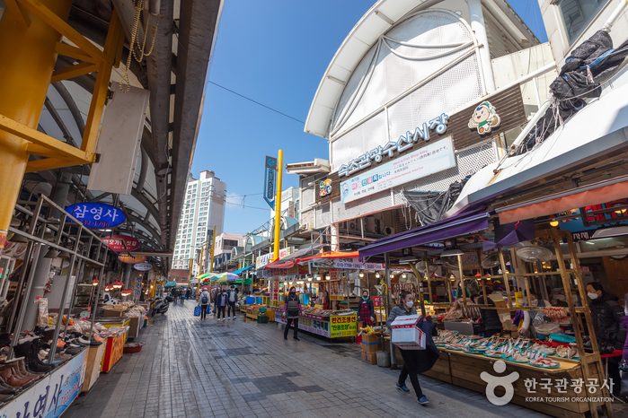
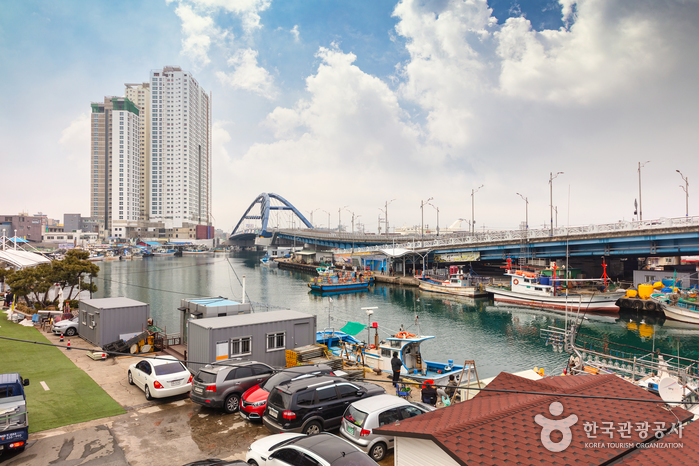
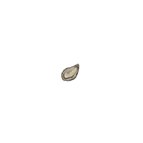

주요 관광지
-

속초아이 대관람차
국내 유일 해변 대관람차 속초아이는 속초해수욕장 정문에 위치하며 높이 65m, 캐빈 36개로 이루어져 있다. 운행시간은 캐빈 탑승 후 15분 소요된다. 속초아이를 타면 푸른 바다, 설악산비경과 시내 도심을 한눈에 둘러볼 수 있다.
이용료 | 대인 12,000원 소인(7세 미만) 6,000원 -

영금정 정자전망대
설악산 줄기가 바다를 향해 내달리다가 바다와 만나는 지점이 영금정이다. 영금정은 파도가 석벽에 부딪치면서 내는 소리를 거문고를 타는 것과 같은 소리를 낸다는 뜻에서 붙여진 이름으로 영금정 일대는 일년 내내 관광객과 속초시민이 방문하는 속초관광의 중심 중 하나다.
-

속초 관광수산시장
1990년 개설된 상가건물형의 중대형시장으로 주 취급품목은 채소, 수산물(오징어, 가자미회, 활어회), 의류 등이다. 강원 속초시 중앙로 147번길 12에 위치하고 있으며, 규모가 상당하고 파는 물품과 먹거리가 다양하다.
-

아바이마을
행정상 명칭은 청호동이고, 아바이마을은 속칭이다. 함경도 출신 가운데서도 특히 어르신들이 많아, 함경도 사투리인 아바이를 따서 아바이마을로 부르기 시작했다. 이곳 일대의 마을 골목에 아바이순대와 오징어순대를 판매하는 상점이 즐비하다.
맛집 및 카페
-

만석닭강정 본점
한식
주소 | 강원 속초시 청초호반로 72 -

청초수물회
해산물
주소 | 강원 속초시 엑스포로 12-36 -

봉브레드
카페/베이커리
주소 | 강원 속초시 동해대로 4344-1